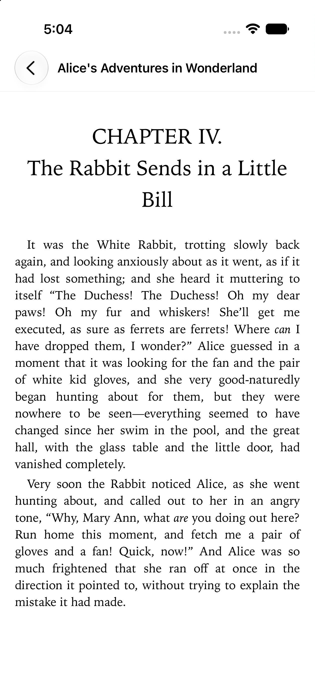
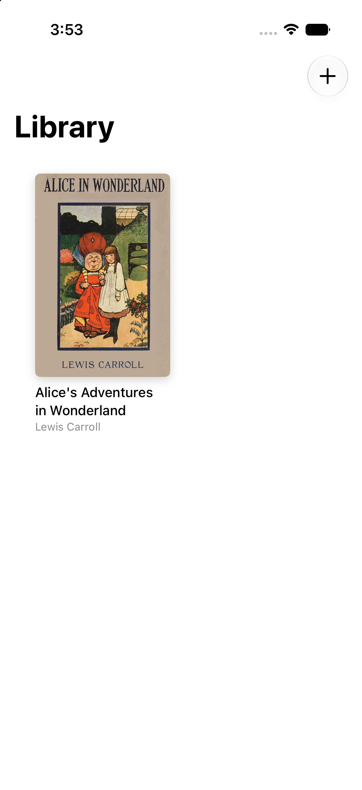
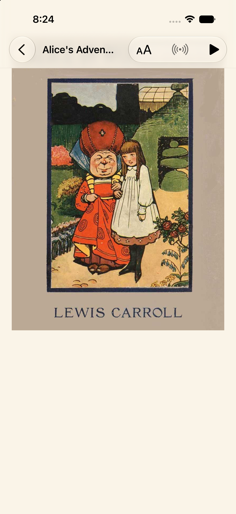

Glyph · cross-device reading
On a reflowable book, “page 87” changes with the screen. A real reading position has to survive fonts, devices, and four-inch displays.
Micah Alpern · Hacker Dojo

The mismatch
A percentage is useful for a progress bar. It is a poor address: layout changes move it, chapters differ in length, and rounding quietly loses the exact sentence.
Stable address
Actual app
Glyph imports EPUBs on the reader, derives content identity, and keeps the reading experience native to the device.

Proof, side by side
Authenticated A → B sync reached the same Chapter IV position
What is actually synchronized
| Tempting value | Problem | Durable value |
|---|---|---|
| Page number | Different pagination per screen and type size | Resource href + progression |
| Global percentage | Approximate and lossy | Readium Locator |
| Filename | Can be renamed or collide | Content-derived book identity |
| Screenshot | Evidence, not an address | Text context for verification |

The honest boundary
The app, locator model, and authenticated sync path exist. A real-device run on the compact e-ink hardware remains the proof that matters for the original use case.
Takeaway
A reading position is an address in the book—not a coordinate on the glass.
Glyph · content identity over page illusion